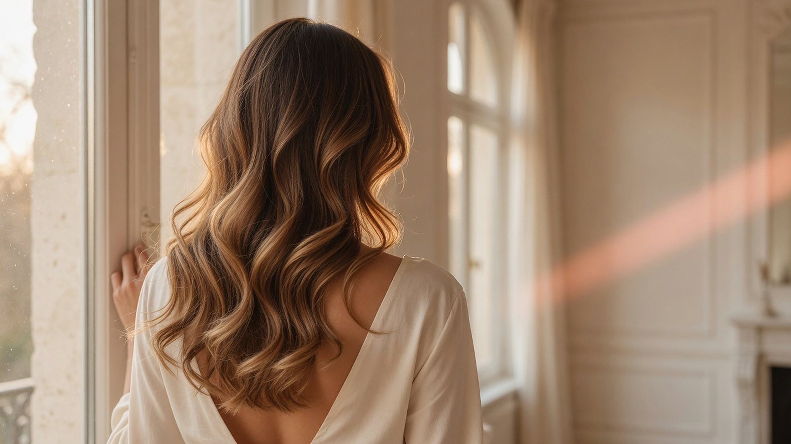
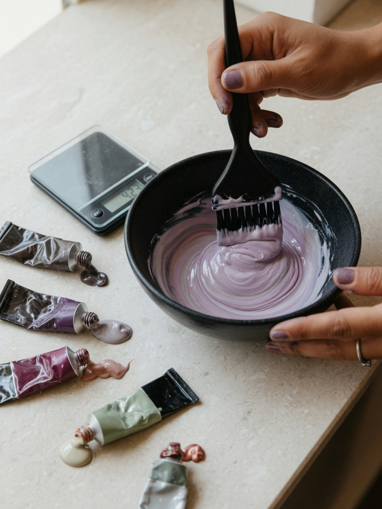
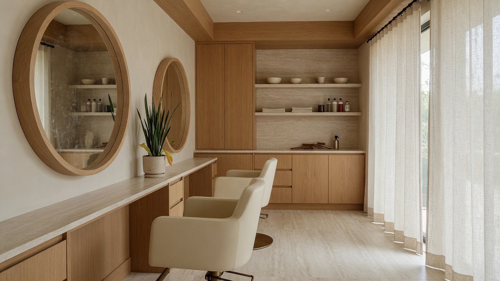
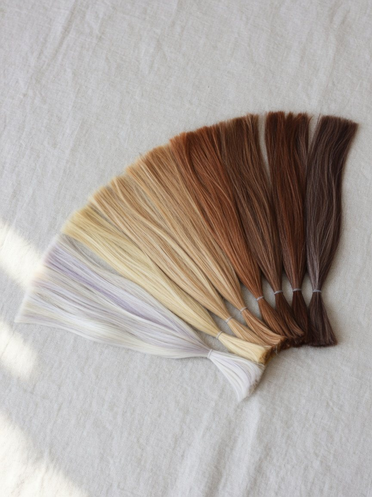

Тонирование
Освежить цвет и вернуть блеск.
от 4 500 ₽
- 1,5 часа
- Держится 6–8 недель
- Уход в подарок
Студия окрашивания «Тон»
Подбираем оттенок и переход на живой пряди. Вы видите результат до того, как сели в кресло.
от 4 500 ₽ · консультация бесплатно
Сначала смотрим ваш натуральный цвет, прошлые окрашивания и свет, в котором вы чаще всего бываете. Потом подбираем оттенок вместе с вами. Красим так, чтобы цвет красиво отрастал.
Оттенки
Карамель
Самый частый выбор осенью. Добавляет волосам глубины.
Переход
Высокий переход ярче и смелее. Низкий отрастает незаметно, обновлять его можно раз в три месяца.

Корни подбираем под ваш натуральный цвет, поэтому через два месяца граница почти не видна.

Один человек от консультации до укладки.
Если оттенок не тот, поправим бесплатно.


Средний визит. Кофе, плед и тишина.
Освежить цвет и вернуть блеск.
от 4 500 ₽
Мягкий переход от корней к концам.
от 9 800 ₽
Смена цвета, исправление прошлых окрашиваний.
от 14 500 ₽
Цены для длины до лопаток. Для длинных волос плюс 20%.
Запись
Вы выбрали: Балаяж · Карамель